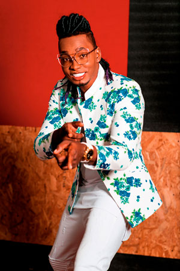
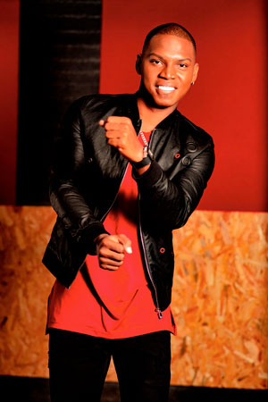
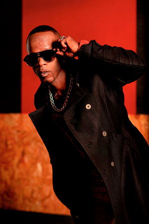

Los Traviesos
El distrito de Aguablanca es un amplio sector de Cali- Colombia, conformado por tres comunas que ocupan buena parte del oriente de la ciudad. Es en este lugar donde se conocieron Diego Quiñones, Freddy Godoy y Willington Montaño, tres jóvenes que desde pequeños soñaron con ser cantantes.
Aquí podrán conocer un poco más de esta agrupación que pone a bailar a los colombianos, al son de la salsa choke.
Revista Mi Gente TV: ¿De dónde salió el nombre Los Traviesos?
Los Traviesos: El nombre nació gracias a nuestro compañero Willy, quien tenía recorrido en la música, hizo parte de varios grupos que nunca prosperaron; en esa misma época, compuso una canción titulada -Niña traviesa- y pensó: “si tengo esta canción por qué no nombrar al grupo “Los Traviesos””, y es así como nace el nombre de nuestra agrupación.
MG: ¿Quién es el más creativo y quién es el que les ayuda con la música, letras, coreografías y vestuario.
LT: Los tres somos creativos, cada uno aporta; en la composición el más creativo es Carlos Mosquera, nuestro productor, más conocido como “CM”, quien le da a nuestras letras sentido, teniendo en cuenta que la salsa choke se conoce por ser un género jocoso con frases divertidas y ritmo alegre para bailar, buscamos que la canción tenga una historia; en cuanto al vestuario siempre contamos con la ayuda de Diego Sasón, líder de la agrupación.
MG: ¿Cuánto tiempo tienen Los Traviesos como agrupación? y ¿Qué influencias musicales tienen?
LT: Siete años tiene la agrupación. En cuanto a las influencias musicales cada uno tiene alguna, Willy desde pequeño ha tenido como referente a Michael Jackson, por su música y baile; Freddy disfruta de los temas de Marc Anthony quien lo inspiran; Diego es fan de Kalimba, pero como agrupación tratamos de ser el Grupo Niche de la salsa choke.
MG: A pesar que la vida los llevaba por un camino totalmente diferente ¿Cómo se encuentran los tres y deciden luchar por un mismo sueño?
LT: El encontrarnos fue algo que creemos tenía que pasar, algo que Dios tenia destinado para nosotros. La historia es rara, yo (Diego) estaba gestionando tarimas y sonido para realizar eventos en las cuadras, celebraciones como el Día del Niño y el Día de las Madres, un gran amigo me estaba ayudando y fue quien me presentó a Willy que ya conocía a Freddy , todo fue muy natural se sintió la química desde el principio; él ya tenía la canción -El ponche- y decidimos grabarla, fue nuestro primer tema; cada quien hizo su aporte en los versos, trabajamos duro por un año y así reunimos $600 mil pesos para poder grabar esta canción a nivel profesional. Empezamos a tocar puertas y la gran oportunidad nos la dio Paulo David Osorio, en esa época director de la emisora Energía, fue gracias a él que se pegó la canción.
MG: Después de luchar mucho por ser reconocidos, llega “La rumba va sola”. ¿Este sencillo, fue planeado para ser un éxito, o simplemente sucedió?
LT: Esta canción no fue nada planeada; después de una conversación sobre fiestas y rumba, empezamos a tararear la melodía, grabamos el coro y de ahí en adelante todo fluyó, la canción se lanzó en bares y centros comerciales logrando una gran acogida.
| PABLO E. | FREDDY GODOY | DIEGO QUIÑONES | WILLINGTON MONTAÑO |
|  |  |  |
MG: Freddy quiere ser actor, Diego y Willy sueñan con plasmar su vida de alguna manera. ¿Para cuándo su película biográfica?
LT: Sí, Freddy sueña con ser actor, incluso estudió actuación en una academia, por motivos personales suspendió sus clases pero espera retomar próximamente, en cuanto a lo de plasmar nuestra vida en la pantalla es algo en los que estamos trabajando buscando apoyo; y queremos que sea un documental.
MG: ¿Qué significó ser parte del proyecto esta es la cultura del MIO?
LT: Fue algo especial para nosotros, es importante mostrarle a las personas cómo querer y cuidar este proyecto que beneficia a Cali, dejando ver una ciudad más organizada y lo más importante crear una cultura del buen manejo de este espacio público, en pocas palabras generar cultura ciudadana.
MG: De los países que han tenido la oportunidad de visitar en sus diferentes giras ¿Cuál les ha gustado más y porqué?
LT: Diríamos que todos, pero en especial España cuando estuvimos en Barcelona fue una experiencia maravillosa por su cultura, costumbres, la comida y el recibimiento que tuvimos, fue algo inolvidable.
MG: ¿Quién es el más travieso de los integrantes y por qué?
LT: El más travieso es Willy, la voz del rapeo siempre está con su recocha que no falta, cuando estamos serios o de mal genio, él es quien nos hace reír haciendo más amena cualquier situación.
MG: -Rumbón y Suena- ft. Pablo E. es su más reciente sencillo ¿Cómo llega este tema a ustedes y cómo se dio esta colaboración con Pablo E.?
LT: Pablo nos dijo que siempre ha sido fan de nosotros. A él se le presenta la oportunidad de participar en un concurso donde nuestro productor era jurado, él gana el concurso cuyo premio, era grabar un tema musical, a lo que sin dudarlo pidió que nos contactaran para grabar esa canción, al escuchar el tema decidimos grabarlo sin pensarlo dos veces y de esta manera hicimos el featuring con Pablo E.
MG: Cuéntenos un poco sobre la producción del vídeo de Rumbón y Suena ¿Quién hace parte de el?
LT: Fue producido por Andrés Kouwenhoven dirigido por Mr. French, contó con la participación de la academia Pioneros del Ritmo y Andrea Lema (instructor de zumba).
MG: ¿En dónde se estarán presentando próximamente y qué sorpresas tiene preparadas para su público?
LT: Ahora mismo tenemos una gira por Ecuador, regresamos a Colombia para prepararnos para la Feria de Cali. En cuanto a las sorpresas tenemos un proyecto muy importante titulado -Cali y jala jala- una adaptación del tema de los maestros Richi Ray & Bobby Cruz, esperamos poder lanzar este tema en la Feria.